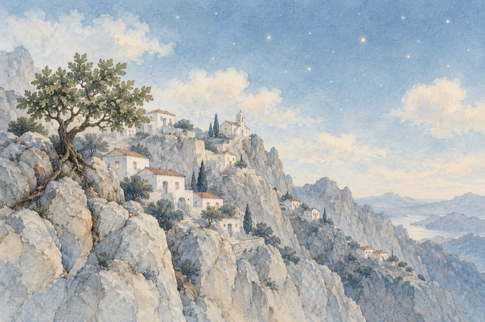

Dilema
La Mikonos, Grecia.
Și totuși venim aici în fiecare an
Ne-atrage și ne cheamă frumosul.
Aici unde omul la început avea un singur plan
Să viețuiască și nu să-și împlinească visul!
De-a fir-a păr
De-ar fi să despicăm problema,
De la un număr până la alt număr,
Apare, de vrem sau nu vrem, dilema!...
Să fie oamenii de-aicea pedepsiți
De-a sta-n aceste locuri?
Unde de toate se simt „nedreptățiți”!
Sau poate fi și al naturii jocuri?!...
Și da și nu la prima ei vedere.
Da, pământul nu-i „pământ”,
Totul e stâncă, iar pe deasupra-un roi de stele,
Dar între toate-acestea e-un așezământ!
Nu, pentru că aici nu crește iarba
Și totuși animalele trăiesc!
Nu, pentru că aici nu curge apa
Și totuși smochinele aicea cresc!
Priviți sunt semănate precum cerul cu stele
Pe vârf de munte pe coastele abrupte
Și acolo în nebănuitele vâlcele
Precum ciupercile, mărețe case și castele!...
Ei, oamenii, sunt eroii,
Ce-n luptă cu viața au fost și sunt biruitori,
Cărând cu ei milenii de istorii,
Purtând pecetea de mari învingători!
Aceasta e dilema
Ce astăzi v-o prezint
Și-acasă vă dau tema
Pentru discernământ!...
Vasile Groza